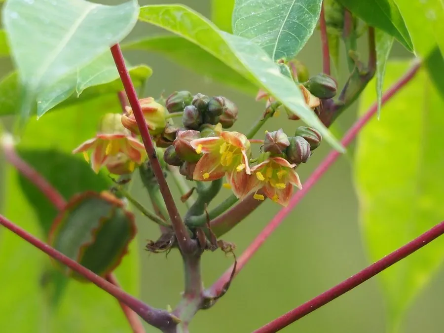

农作物与经济植物 · 植物界
木薯 Manihot esculenta

木薯的块根富含淀粉，是热带地区重要的粮食和淀粉原料作物，但生木薯含氰苷，必须处理后才能食用。
- 分类
- 门被子植物门纲双子叶植物纲目金虎尾目科大戟科属木薯属
- 栖息环境
- 热带与亚热带的山地旱地，耐旱耐瘠薄，适应酸性土壤
- 地理分布
- 原产南美亚马孙流域，现主产于非洲、巴西、东南亚及中国华南
- 保护级别
- 暂无评估（栽培作物）
物种志
木薯是大戟科灌木状多年生植物，株高 1–3 m，茎直立、木质化，有节。叶片掌状深裂，裂片 3–7 枚，盾形，叶柄长。花单性同株，圆锥花序，花小，黄白色。地下块根圆柱形或纺锤形，长 30–100 cm，富含淀粉，外皮褐色，肉白色。
木薯原产南美洲亚马孙流域，当地原住民栽培历史已有数千年，19 世纪传入非洲和亚洲，如今是热带地区重要的粮食和淀粉作物。它耐旱、耐瘠薄，适应酸性土壤，管理粗放，产量高。块根含淀粉约 20%–30%，可加工成木薯粉、木薯淀粉、珍珠奶茶中的“珍珠”和酒精、饲料；但生木薯含氰苷，有毒性，必须经浸泡、煮熟或发酵脱毒后才能食用。中国广东、广西、海南等地有种植。
形态与习性
- 株高1–3 m，茎木质化
- 叶掌状深裂，裂片 3–7 枚
- 块根圆柱形，含淀粉约 20%–30%
- 用途木薯粉、淀粉、酒精与饲料
- 毒性生木薯含氰苷，需脱毒处理
- 特性耐旱耐瘠薄，产量高
趣味知识
- 木薯原产南美，如今是非洲许多国家的重要粮食。
- 木薯块根富含淀粉，珍珠奶茶里的“珍珠”常用木薯淀粉做。
- 生木薯含氰苷，有毒性，必须经过脱毒处理才能食用。